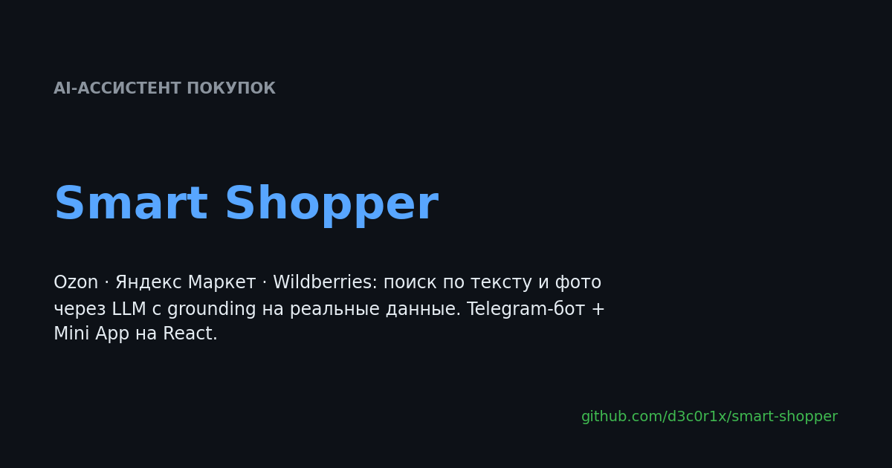
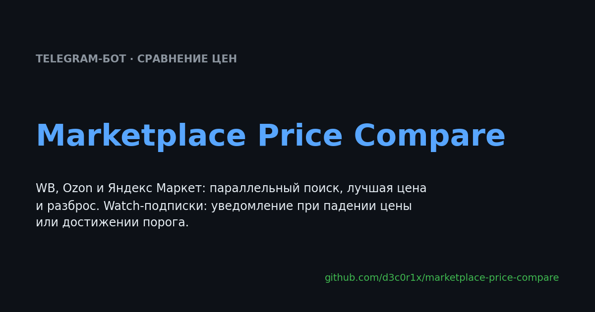
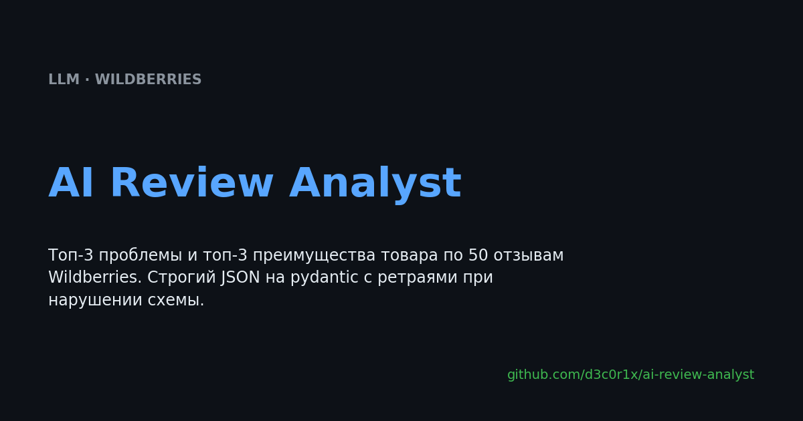
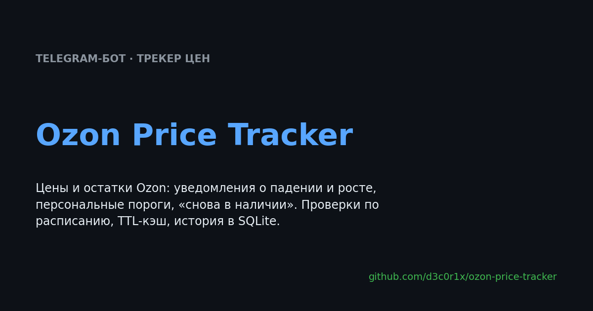
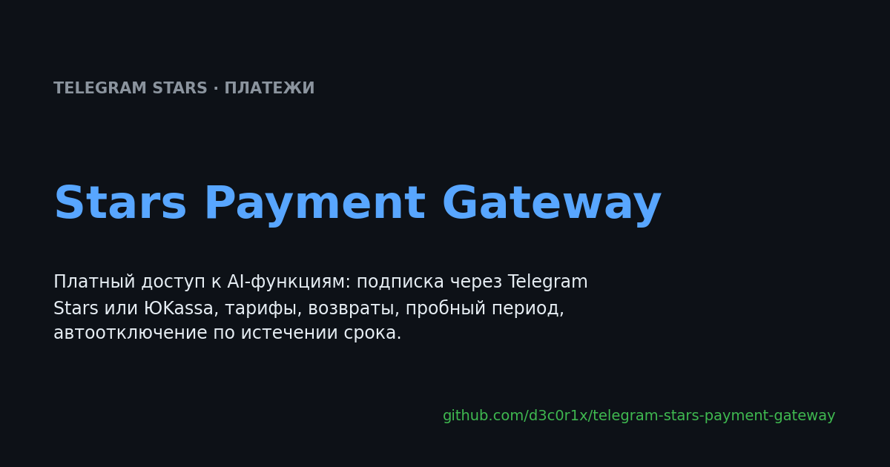
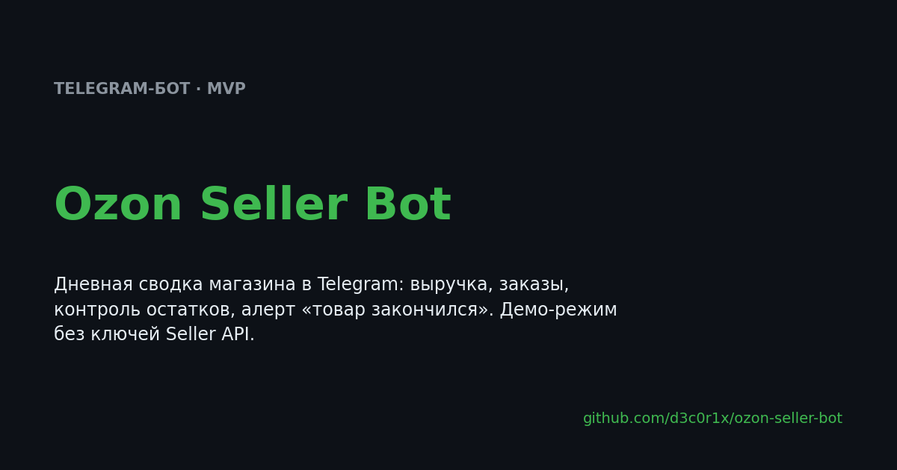
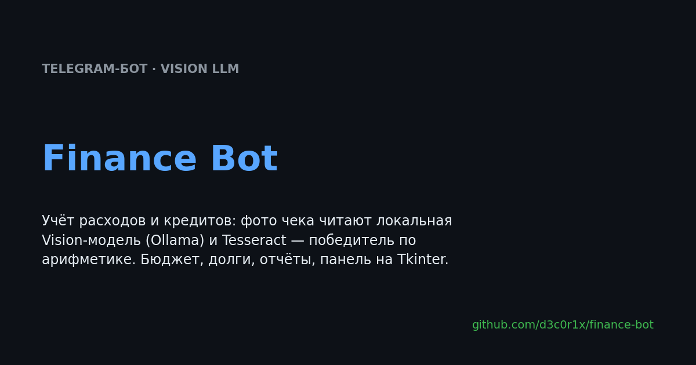
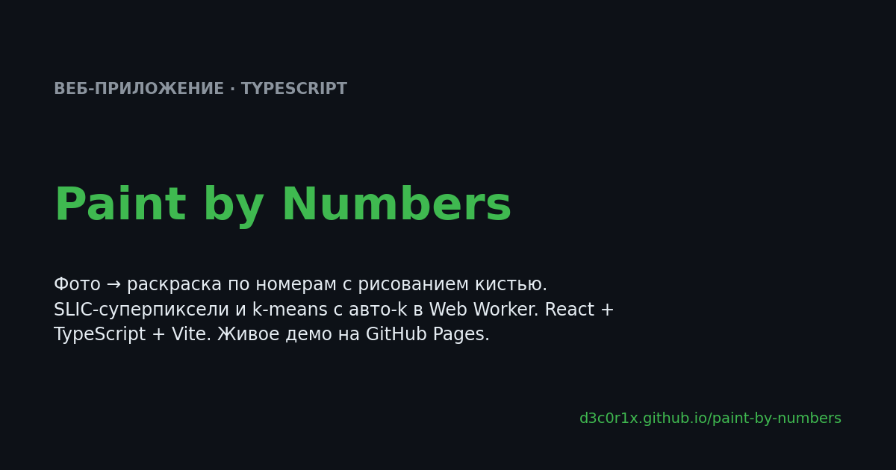
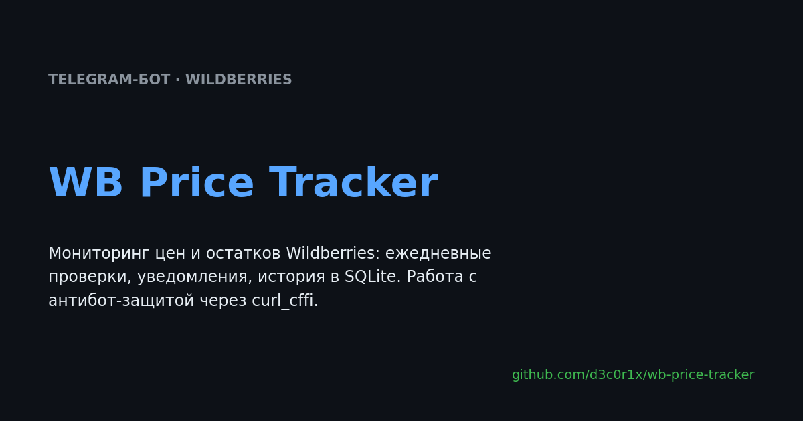
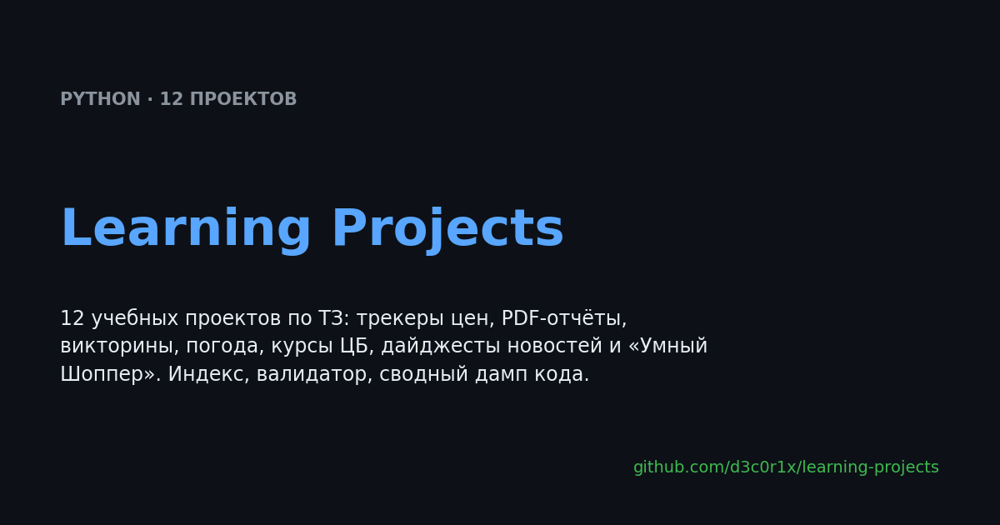

EN · RU
AI вайб-кодер и прототипист. Довожу прототипы и MVP от идеи до рабочего продукта с помощью AI-инструментов: Cursor, ChatGPT, OpenRouter и другие LLM.
идея → промпт → рабочий код → отладка → работающий сервис

«ChatGPT для маркетплейсов»: поиск по тексту и фото, анализ отзывов и сравнение цен на Ozon, Яндекс Маркете и Wildberries — только реальные данные, без выдумок (grounding). Telegram-бот + Mini App на React с общим состоянием сессии.

Сравнение цен WB, Ozon и Яндекс Маркета: параллельный поиск во все маркетплейсы, лучшая цена и разброс. Watch-подписки: уведомление, когда цена упала или достигла порога.

Топ-3 проблемы и топ-3 преимущества товара по 50 отзывам Wildberries через LLM. Строгий JSON на pydantic с ретраями при нарушении схемы.

Отслеживание цен и остатков Ozon: уведомления о падении/росте, персональные пороги, «снова в наличии». Проверки по расписанию, кулдаун против спама.

Платный доступ к AI-функциям: подписка через Telegram Stars / ЮKassa, PreCheckoutQuery и SuccessfulPayment, тарифы, возвраты, пробный период.

MVP-бот для продавцов Ozon: дневная сводка магазина — выручка, заказы, контроль остатков (🔴/🟡), топ товаров. Клиент Seller API с детерминированным демо-режимом без ключей.

Учёт расходов и кредитов: фото чека читают локальная Vision-модель (Ollama qwen3-vl) и Tesseract, победитель — по арифметике. Бюджет, долги, отчёты, панель на Tkinter.

Фото → раскраска по номерам с рисованием кистью. SLIC-суперпиксели и k-means с авто-k в Web Worker, React + TypeScript. Живое демо →

Мониторинг цен и остатков Wildberries с ежедневными проверками и уведомлениями; история цен в SQLite, работа с антибот-защитой через curl_cffi.

12 учебных проектов по ТЗ: трекеры цен, PDF-отчёты, викторины, погода, курсы ЦБ, дайджесты новостей и «Умный Шоппер». Индекс, валидатор, сводный дамп кода.
Backend: Python 3.11+, FastAPI, TypeScript, React
Telegram: aiogram 3, Mini App (React + Vite), Telegram Stars
AI/LLM: OpenRouter, YandexGPT, Ollama (LLM + Vision), prompt engineering, строгий JSON на pydantic
Интеграции: Ozon, Wildberries, Яндекс Маркет, Open-Meteo, ЦБ РФ, RSS/Atom, PDF
Инфраструктура: SQLite (aiosqlite), APScheduler, Docker, GitHub Actions, pytest
Разработка AI-сервисов и автоматизация рутинных процессов
Интеграция внешних API и AI-моделей
Telegram-боты и Telegram Mini Apps
Backend на Python/FastAPI
LLM, Vision-модели и prompt engineering
MVP от идеи до рабочего прототипа
Отладка и доработка AI-сгенерированного кода
Данные Ozon, Wildberries и Яндекс Маркета